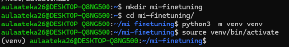
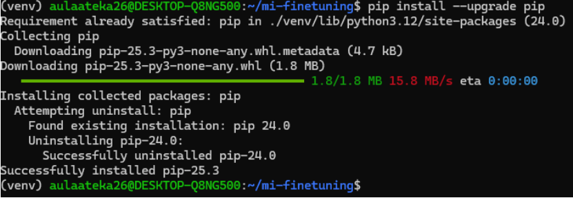
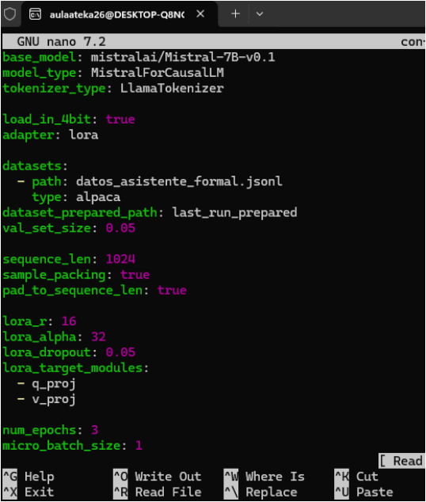
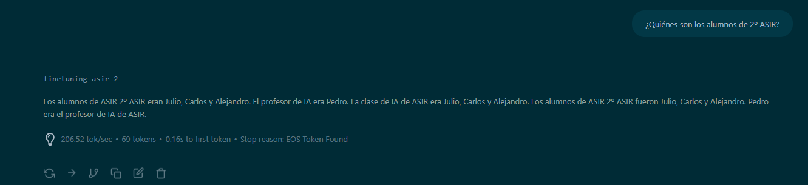

Fine-Tuning Local con RTX 5070 Ti
Carlos Giganto LobatoEste manual documenta el proceso paso a paso para realizar un ajuste fino (Fine-Tuning) del modelo Gemma-2-2B utilizando la librería Unsloth en un entorno nativo (o WSL2).
2. Preparación del Entorno
Es fundamental trabajar en un entorno limpio para evitar conflictos de dependencias.
Paso 2.1: Creación de Carpeta y Entorno Virtual
Creamos el directorio de trabajo y aislamos las librerías con venv. Esto asegurará que nuestro sistema base no se corrompa.
mkdir mi-finetuning
cd mi-finetuning
python -m venv venv
source venv/bin/activate
Figura 1: Creación de la carpeta, generación del entorno (venv) y activación del mismo, visible en el prompt.Paso 2.2: Actualización e Instalación Base
Actualizamos pip para evitar errores de compatibilidad con paquetes modernos.
pip install --upgrade pip
Figura 2: Proceso de descarga e instalación de la última versión de pip en el entorno.3. Errores Críticos Superados (El problema de la GPU)
Durante la instalación de PyTorch y Unsloth, nos encontramos con varios bloqueos severos. Documentamos aquí las soluciones definitivas que aplicamos en el terminal.
Error 1: "Unsloth cannot find any torch accelerator"
Causa: Al instalar paquetes de forma estándar, Python instaló la versión de procesador (2.10.0+cpu) en lugar de la versión de Tarjeta Gráfica. Unsloth y otras dependencias sobrescribieron silenciosamente la instalación de CUDA.
Solución: Desinstalar todo rastro de PyTorch y forzar la instalación de la versión Nightly (CUDA 12.8) de forma aislada.
pip uninstall -y torch torchvision torchaudio xformers
pip install --pre torch torchvision torchaudio --index-url https://download.pytorch.org/whl/nightly/cu128Error 2: "ReadTimeoutError / Operation timed out"
Causa: Los paquetes de PyTorch con CUDA pesan alrededor de 2.8 GB. Las fluctuaciones en la red causaron que pip cancelara la descarga por falta de respuesta del servidor.
Solución: Añadimos el parámetro --timeout 10000 y --no-cache-dir para dar tiempo de espera ilimitado al instalador.
4. Creación del Dataset (datos_asistente_formal.jsonl)
Para enseñar a la IA a comportarse de una manera específica, creamos un archivo JSONL (formato Alpaca) que contiene instrucciones y sus respuestas ideales.
nano datos_asistente_formal.jsonl Figura 3: Editor de texto mostrando los pares de instrucción/salida sobre Pedro Sánchez para entrenar el comportamiento formaL.
Figura 3: Editor de texto mostrando los pares de instrucción/salida sobre Pedro Sánchez para entrenar el comportamiento formaL.
5. Archivo de Configuración (config_formal.yml)
En lugar de modificar los hiperparámetros directamente en el código Python, utilizamos un archivo de configuración YAML para estructurar las reglas del Fine-Tuning, los adaptadores LoRA y la cuantización[cite: 47, 50, 53].
base_model: mistralai/Mistral-7B-v0.1
load_in_4bit: true
adapter: lora
datasets:
- path: datos_asistente_formal.jsonl
type: alpaca
lora_r: 16
lora_alpha: 32
lora_target_modules:
- q_proj
- v_proj
num_epochs: 3
micro_batch_size: 1
gradient_accumulation_steps: 2
learning_rate: 0.0002
[cite_start]Figura 4: Archivo de configuración estableciendo hiperparámetros como r: 16, alpha: 32, epochs: 3 y optimizador adamw[cite: 60, 61, 66, 96, 97].6. Ejecución y Resultados
Una vez que el entorno reconoció la RTX 5070 Ti, lanzamos el proceso de entrenamiento[cite: 100]. Al terminar, interactuamos con el modelo resultante para verificar si había asimilado el nuevo conocimiento y estilo de respuesta.

Figura 5: Interfaz del chat validando la inferencia del modelo tras el fine-tuning, respondiendo a la consulta sobre los alumnos de ASIR[cite: 101, 102].